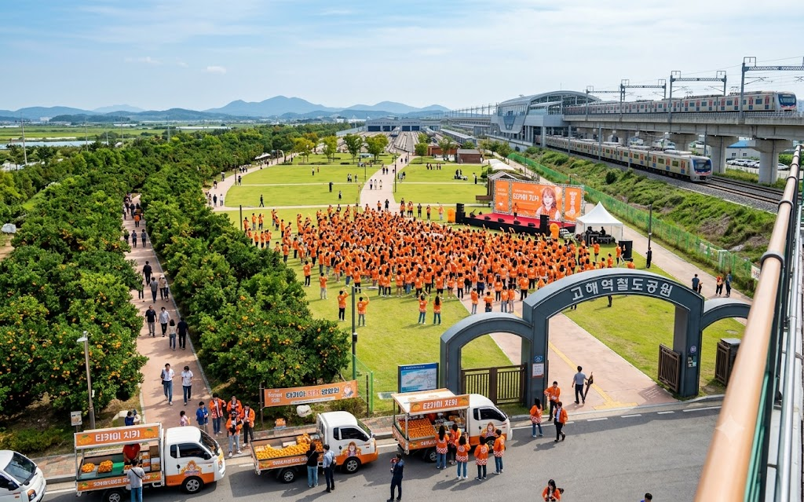

고해역철도공원
Gohae Station Railway Park

| 소재지 |
효빈광역시 탄성군 고해읍 이와리·천가리 일원 |
| 종류 |
철도 테마공원, 근린공원, 광장 |
| 인접 시설 |
고해역 (1호선, 빈효선)
(예정) 4호선 고해역 확장 부지 |
| 관리 주체 |
효빈광역시 탄성군청 공원녹지과 |
| 연계 교통 |
1호선 빈효선 고해역 도보 1분 |
"미래의 오렌지 라인(4호선)을 기다리며, 타카미 치카의 영광을 찬양하는 거대한 성지."
1. 개요
효빈광역시 탄성군 고해읍에 위치한 거대한 규모의 철도 테마공원. 고해역에서 고해차량사업소로 향하는 너른 평지에 끝없이 펼쳐져 있다.
표면상으로는 인근 주민들을 위한 대형 녹지공간이자 산책로지만, 실상은 미래의 효빈 도시철도 4호선 연장 역사를 품기 위해 확보해 둔 막대한 스케일의 유휴 부지를 공원화한 것이다. 또한, 동네 이름이 고해읍(타카미)과 천가리(치카)라는 점 덕분에, 주말만 되면 《러브 라이브! 선샤인!!》 팬들의 초대형 성지순례 및 오프라인 이벤트가 쉴 새 없이 열리는 광란의 무대가 되기도 한다.
2. 역사 및 특징
- 방치된 철도 부지에서 공원으로: 본래 이 거대한 부지는 고해역 일대의 철도 시설(주박 기지 및 화물 야적장) 확장을 위해 일찌감치 매입해 둔 땅이었다. 그러나 개발이 지연되면서 잡초만 무성한 황무지로 방치되다시피 했고, 흉물스럽다는 민원이 빗발치자 탄성군청이 대대적으로 잔디를 깔고 나무를 심어 '고해역철도공원'이라는 이름으로 시민에게 임시 개방했다.
- 4호선 연장의 약속의 땅: 현재 4호선의 종점은 바로 옆 천가역이지만, 차량기지로 들어가는 긴 인입선이 이 공원 바로 밑을 관통한다. 장기적으로 4호선을 고해역까지 직결 연장하여 거대한 지하/지상 통합 환승 센터를 올릴 계획이 잡혀 있다. 즉, 이 공원의 드넓은 잔디밭은 언제든 거대한 굴착기가 들어와 지하철 공사판으로 변할 수 있는 '잠자는 용'과 같은 곳이다.
3. 치카 제국 성지순례의 중심
이 공원을 먹여 살리는(?) 진정한 원동력. 고해읍 자체가 타카미 치카(高海千歌)의 이름을 완벽하게 구현한 동네다 보니, 좁은 골목이나 역전 광장 대신 수만 명을 수용할 수 있는 이 거대한 철도공원이 덕후들의 메인 베이스캠프가 되었다.
- 8월 1일 치카 탄신일 축제: 매년 8월 1일이 되면 이 넓은 공원이 주황색(귤색)으로 완전히 뒤덮인다. 전국에서 몰려든 러브라이버들이 주황색 핫피를 입고 모여들어 귤을 박스째로 나눠 먹으며 대규모 생일 파티를 벌인다.
밤에 오렌지색 블레이드(야광봉)를 켠 인파가 몰려있는 걸 멀리서 보면 공원에 산불이 난 줄 알 정도다.
- 귤(미칸) 직거래 장터: 지역 특산물인 귤 농가들도 이 기회를 놓치지 않는다. 성지순례객들을 노리고 공원 입구에 귤 직거래 트럭을 세워두는데, 치카 스티커 하나만 붙여놔도 1시간 만에 완판되는 기적의 창조경제가 매주 일어난다.
4. 주요 시설
- 주황색 간이역 파빌리온: 공원 한가운데에 설치된 4호선 상징(주황색)의 오픈형 구조물. 언젠가 들어설 4호선 역사를 미리 체험해 보라는 낭만적인 취지로 만들어졌지만, 현재는 비가 올 때 코스어들이 비를 피하거나 팬들이 네소베리 제단을 차리는 용도로 절찬리에 쓰이고 있다.
- 밀감(귤)나무 오솔길: 타카미 치카의 상징이자 지역 특산물인 귤나무를 공원 산책로 양옆으로 빼곡하게 심어놓았다. 가을철 귤이 노랗게 익어갈 때쯤이면 과수원을 방불케 하는 상큼한 향기가 진동한다.
물론 열매를 몰래 따먹다 걸리면 탄성군청의 매운맛 과태료를 맛보게 된다.
- 1호선/빈효선 트레인 뷰잉 포인트: 공원 외곽의 약간 높은 둔덕에서는 지상으로 노출된 빈효선 열차와, 역으로 진입하는 열차들을 아주 가깝게 볼 수 있다. 고속철도공원 못지않게 철덕들이 망원렌즈를 들고 진을 치는 출사 포인트다.
5. 연계 교통
- 도시철도: 1호선과 빈효선 환승역인 고해역 1번 출구에서 나오면 바로 공원의 거대한 아치가 방문객을 반긴다.
- 미래 노선: 향후 4호선 고해역이 공원 지하(또는 지상부 일부)에 지어질 경우, 공원 안에서 직접 역으로 들어가는 대형 썬큰 광장이 뚫릴 예정이다.
6. 여담
- 이 드넓은 노른자 땅을 가만둘 리 없는 부동산 개발업자들이 호시탐탐 아파트나 상가를 올리려고 군청을 찌른다는 소문이 파다하다. 하지만 그럴 때마다 "치카쨩의 땅을 콘크리트로 덮을 셈이냐!"며 궐기하는 전국구 오타쿠들의 사이버 폭격과, "미래의 4호선 환승센터 부지를 팔아먹을 셈이냐!"는 지역 철덕들의 합동 방어전에 막혀 번번이 무산되고 있다.
- 가끔 공원을 걷다 보면 1호선 마스코트 고나미와 4호선 마스코트 다로나 코스프레를 한 공식 알바생(?)들이 전단지를 나눠주며 상황극을 펼치는 훈훈한 광경을 목격할 수 있다.